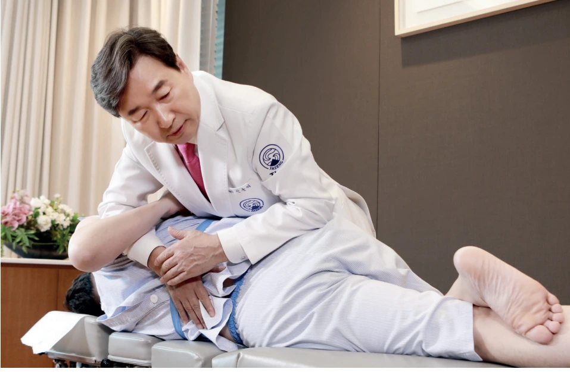
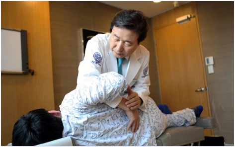
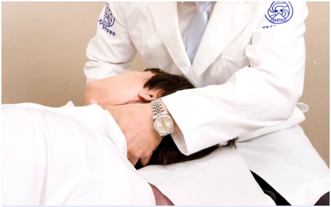
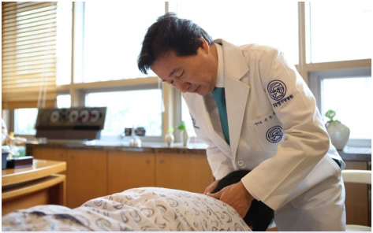
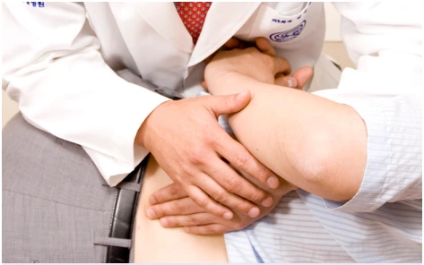

자생 추나요법의 특징
요추뿐 아니라 턱·목·등·허리·골반 등 척추 전체의 균형을 살핍니다. 임상 경험을 가진 한의사가 직접 시행하며, 신준식 박사의 추나 경험을 계승·발전시키고 정기 교육을 통해 표준화된 치료를 제공합니다.

부위별 치료의 이해
요추 추나요법
틀어진 뼈와 근육을 바로잡아 통증 완화와 척추 기능 회복을 돕습니다.

턱관절 추나요법
턱·목·어깨의 위축되거나 굳은 근육을 풀어 턱관절의 위치와 운동범위 회복을 돕습니다.

경추 추나요법
경추의 고정된 관절을 열어주고 주변 근육을 이완해 통증 감소와 순환을 돕습니다.

관절 추나요법
틀어진 관절을 바로잡고 주변 연부 조직을 풀어 통증 완화와 기능 회복을 돕습니다.

추나 교육의 표준화와 건강보험 적용
1991년 대한추나의학회(현 척추신경추나의학회) 설립 이후 한국추나학과 표준임상지침서는 12개 한의대·대학원 교재로 채택되어 추나 교육과 치료의 표준화에 기여했습니다. 2019년 4월에는 추나요법에 건강보험이 적용되었습니다.